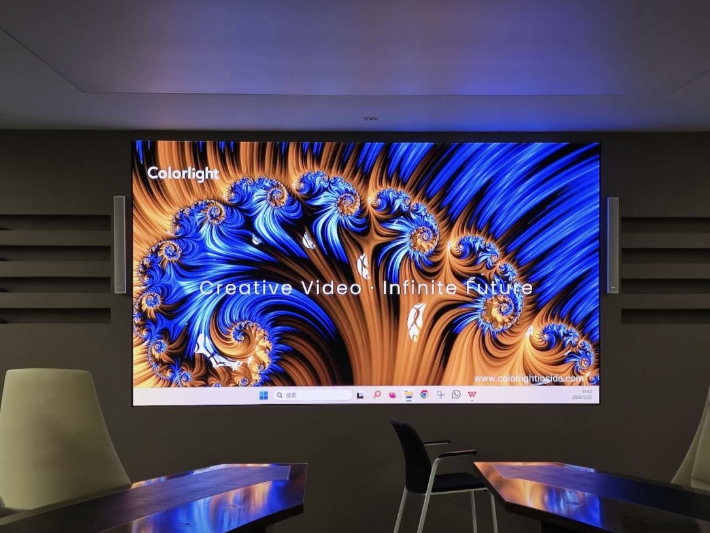

By David
What is led display rigging installation? Led display rigging installation is hanging the screen from the truss or the structure with the hoists, the shackles, and the cables, above the stage or the audience. It is the highest-risk LED work. This 2026 guide explains the rigging.
A hung LED wall is above the people, so the rigging must be right. The screen's weight, the hardware, and the truss decide the safety. The rigging is not the place to guess, and the qualified riggers and the correct load are the conditions of the safe installation.
This led display rigging installation guide is written for the riggers and the event crews. It explains the hardware, the load, and the safety.
The rigging uses the truss, the hoists, the flight bars, the shackles, and the slings. Each has a load rating, and the weakest link decides the safe load. The rigger uses the rated hardware and inspects it before the lift.
| Hardware | What It Does | Check |
|---|---|---|
| Truss | Carries the load | The rating and the condition |
| Hoist | Lifts the screen | The WLL and the brake |
| Flight bar | Spreads the load | The rating and the bolts |
| Shackle and sling | Connects the parts | The WLL and the wear |
The working load limit, the WLL, is the safe load of each item, with the safety factor. The rigger never exceeds it, and the combined load is within the truss. The rated hardware and the correct load make the rigging safe.
| Point | Check |
|---|---|
| Truss | Rating and span |
| Hoist | WLL and brake |
| Flight bar | Rating and bolts |
| Venue | Point limit |
The screen's total weight, with the frames and the cables, is divided across the rigging points. The load per point must be within the truss and the hoists. The rigger calculates the load and the balance, so no point is overloaded.
The truss carries the load, so its rating and the spans matter. A long span bends more, and the bend affects the screen. The rigger confirms the truss can take the load across the span, and uses the correct hanging points and the motors.
The venue's rigging points also matter, because the load hangs from the building. The rigger checks the venue's points and the limit. The venue with the weak points may need the ground support instead, so the check is part of the plan.
The rigging above the audience needs the safety: the qualified riggers, the secondary safety, and the exclusion zone. The secondary safety catches the load if the main fails. The zone keeps the people away during the lift.
The riggers should follow the safe practice, with the correct PPE, the tool, and the communication. The lift is the planned and the supervised. The safety is the priority, over the schedule and the cost, because the failure above the people is the worst outcome.
The common mistakes are the unrated hardware, the overloaded point, and the unqualified rigger. Others include the no secondary safety, the ignored venue limit, and the rushed lift. Each risks the catastrophic failure, so the rigging demands the discipline and the training.
The remedy is to use the rated hardware, calculate the load, and use the qualified riggers, with the secondary safety and the zone. The correct rigging hangs the screen safely above the crowd, whatever the event and the venue.
The rigging starts with the plan: the points, the load, the sequence, and the safety. The rigger plans before the lift. The plan identifies the load per point and the hardware. The rigging without the plan is the hazard, so the plan is the first step of the safe installation.
The plan should be shared with the crew and the venue, so the parties know the lift. The plan includes the exclusion zone and the timing. The shared plan aligns the team. The rigging plan, communicated, prevents the confusion and the accident at the critical lift.
The screen hangs in the sequence: the truss, the hoists, the flight bars, the cabinets, and the final level. The sequence matters, because the load builds and the level depends on the order. The rigger follows the planned sequence, so the screen ends level and safe.
The sequence should also allow the checks at the stages, such as the hardware inspection and the level check. The rigger pauses to confirm before the next stage. The staged sequence, with the checks, catches the issue before the load is the full. The safe rigging is the methodical, not the rushed.
The screen's cabinets and the rigging connect, with the flight bars and the brackets. The connection must carry the load and keep the screen flat. The rigger confirms the brackets and the bolts. The screen and the rigging are one system, so the connection is the critical point.
The screen also affects the rigging, because the weight and the size decide the points. The large screen needs the more points and the stronger truss. The rigger works from the screen's data. The screen and the rigging, planned together, hang the wall safely above the stage.
The outdoor rigging faces the wind, which adds the load and the risk. The rigger should monitor the wind and stop if it exceeds the limit. The wind on the hung screen is the serious hazard. The weather-aware rigging, with the wind limit, protects the crew and the audience.
The rain and the storm also affect the rigging, so the plan includes the response. The screen may need the lower position or the removal in the wind. The rigger follows the venue's and the screen's wind policy. The weather consideration is part of the safe rigging for the outdoor events.
The rigging crew should be the trained and the qualified, with the clear roles. The crew knows the sequence, the hardware, and the signals. The training makes the rigging safer. The skilled crew is the foundation of the safe lift above the audience.
The crew should also have the communication, with the radios and the signals, so the lift is the coordinated. The mixed signals cause the accident. The crew trains the communication. The rigging, with the qualified and the communicating crew, is the safe and the professional.
The rigging should be documented, with the plan, the load, and the inspection. The record supports the safety and the future event. The buyer should keep it. The documented rigging shows the method and the margin, which protects the parties and supports the repeat events and the improvement.
The record should also note the hardware and the inspection result, so the next event verifies the same. The rigger checks against the record. The documented rigging, from the plan to the inspection, is the safe practice that the serious event follows for the screen above the crowd.
The rigging is the specialist work, so it costs the money, with the riggers, the hardware, and the plan. The buyer should budget it, because the safe rigging is not the place to save. The cheap rigging, with the unrated hardware, risks the failure above the people, which no budget justifies.
The rigging cost also includes the venue's fees and the inspection, which the buyer should know. The complete budget reflects the real cost of the safe event. The buyer who budgets the rigging properly avoids the cutting of the corners that the tight budget tempts and the safety forbids.
The rigging is regulated in many places, with the codes and the qualifications. The buyer should confirm the local rule. The compliant rigging follows the code. The qualified rigger knows the regulation, so the buyer should choose the certified rigging for the event and the safety and the insurance.
The regulation also covers the venue's requirements, such as the rigging plan's approval. The buyer should submit the plan early. The compliant process avoids the delay and the refusal. The regulated rigging, followed properly, protects the event and satisfies the venue and the insurance and the law.
The led display rigging installation hangs the screen from the truss or the structure, with the rated hardware and the qualified riggers. Calculate the load, check the hardware, and set the safety, so the screen is safe above the people.
Riggers who follow the practice hang the screen without the incident. The rigging is the highest-risk LED work, and the discipline, the training, and the correct load make it safe for the crew and the audience.

For this requirement our range covers it directly: the COB Z rental series (7680Hz flip-chip) and the COB ZH touring series (sealed, wind-rated).
Ask us for the rigging data and the support for your LED display event installation.
Request Rigging DataChat on WhatsApp